SCOPE OF WORK
HARDWARE TERPASANG
Menangani instalasi kabel terstruktur skala pabrik/gedung, integrasi CCTV enterprise, IP PBX Yeastar, dan sistem tata suara gedung TOA.
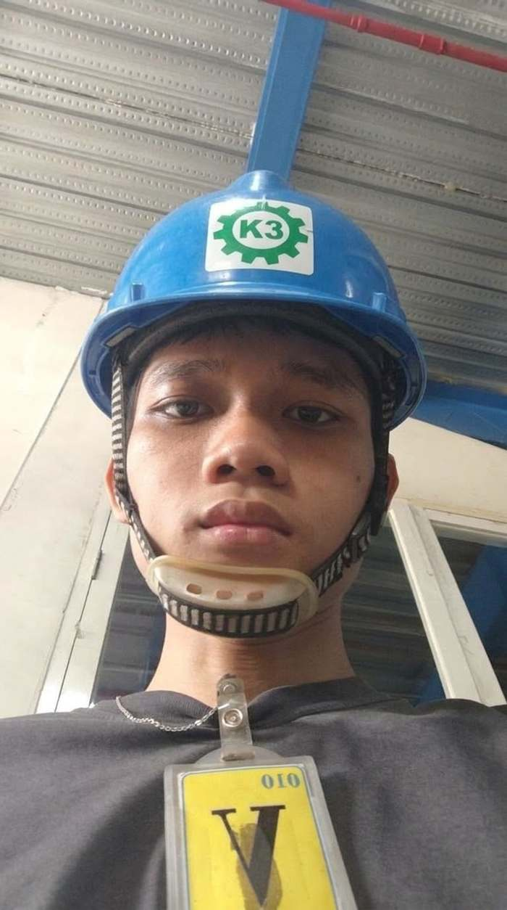
Kategori perangkat dan sistem yang ditangani di lapangan secara rutin.
Dokumentasi — klik untuk detail teknis.
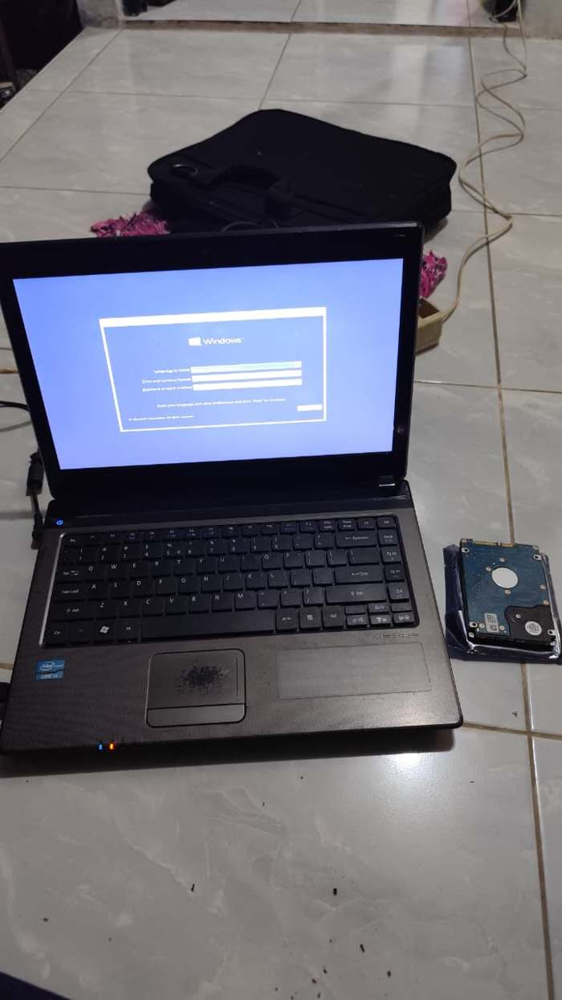
OS INSTALLATIONSCOPEInstalasi ulang Windows OS pada unit laptop klien, pemeriksaan kondisi hardware, persiapan HDD pengganti untuk unit backup.
HARDWARELaptop Klien, HDD 2.5", Installer Windows OS
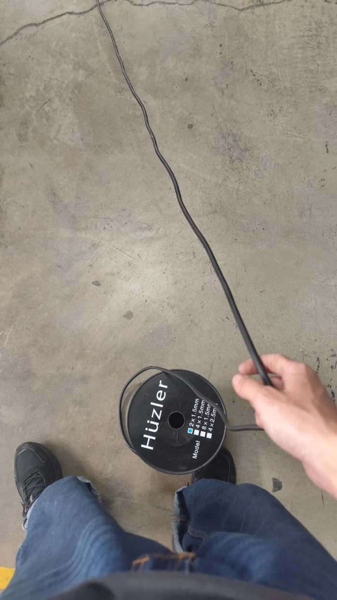
CABLE PULLINGSCOPEPenarikan kabel pada jalur outdoor menuju titik kamera, pengukuran panjang dari gulungan, persiapan jalur sebelum masuk konduit.
HARDWAREKabel Power 2x1.5mm, Cable Reel
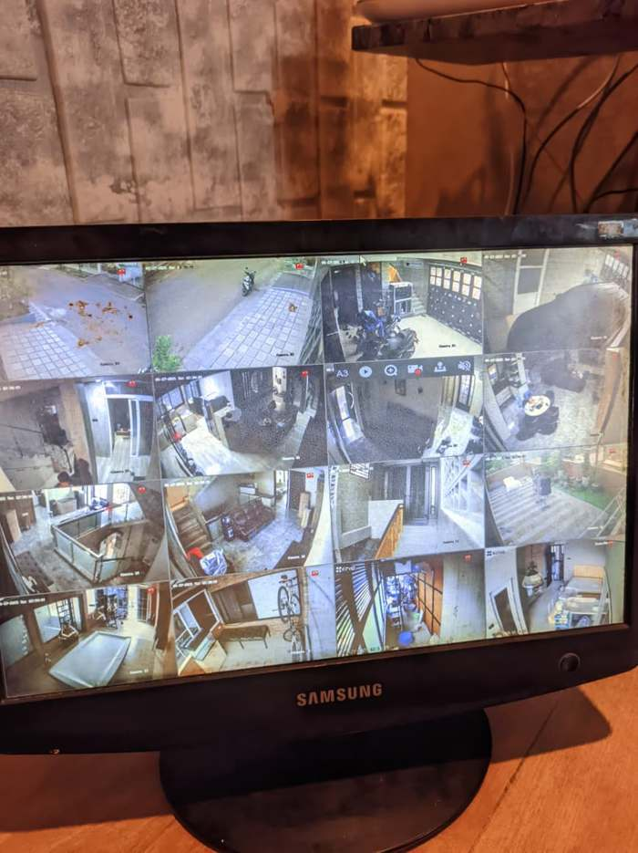
16-CH MULTIVIEWSCOPEKonfigurasi split-view 16 kamera pada monitor NVR, verifikasi sudut pandang tiap titik, pengecekan status rekaman aktif.
HARDWARENVR 16-Channel, Monitor, Kamera IP Indoor/Outdoor
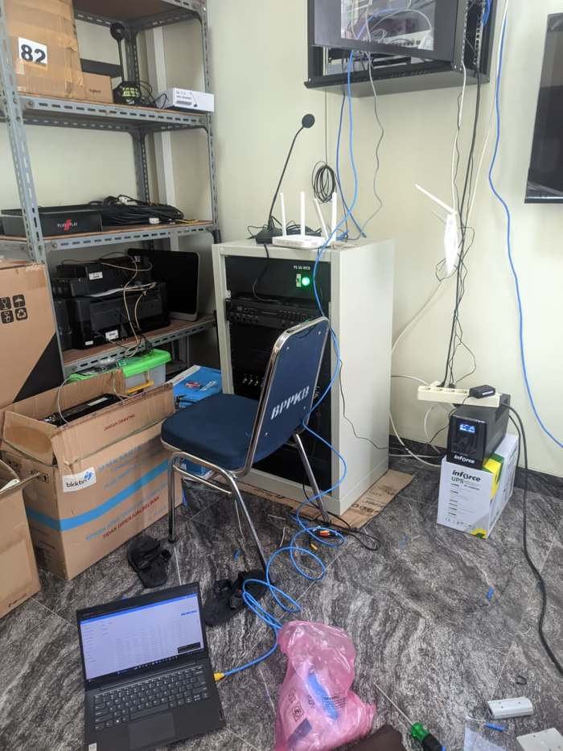
NETWORK RACK SETUPSCOPEPerapian kabel pada rack, instalasi UPS & router WiFi, pengecekan status koneksi melalui laptop teknisi di lapangan.
HARDWAREServer Rack 6U, UPS Inforce, Router Tri-Antenna, Patch Cable
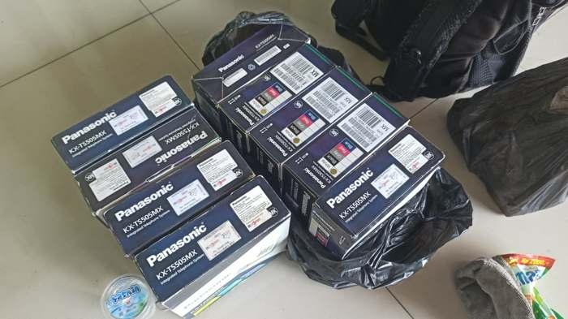
TELEPHONE UNIT DEPLOYMENTSCOPEPenerimaan & sortir unit telepon PABX per lantai, pengecekan kelengkapan dus sebelum proses instalasi ekstensi.
HARDWAREPanasonic KX-TS505MX x12, Kabel Ekstensi
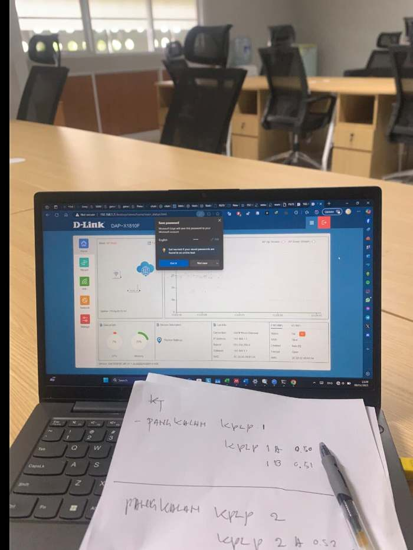
AP CONFIGURATIONSCOPELogin web-admin access point, pengaturan jaringan WiFi, pencatatan manual titik pangkalan & ID perangkat.
HARDWARED-Link DAP-X1810, Laptop Konfigurasi, Logbook Lapangan
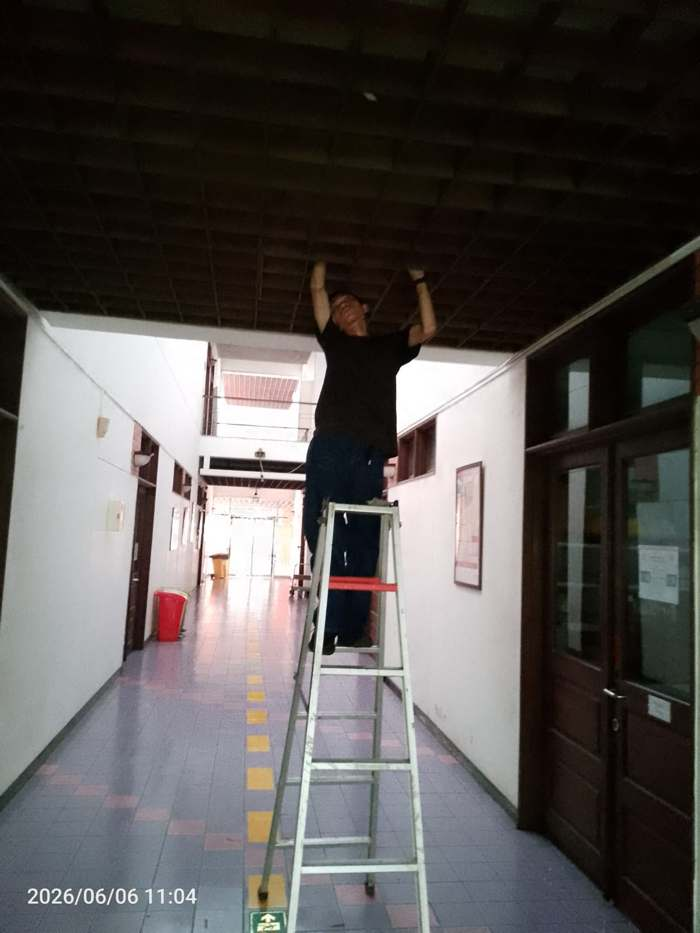
CEILING CABLE ROUTINGSCOPEPenarikan kabel jaringan di atas plafon gedung, pemasangan dudukan kabel, kerja pada ketinggian sesuai prosedur K3.
HARDWARETangga Alumunium, Kabel UTP, Cable Clip
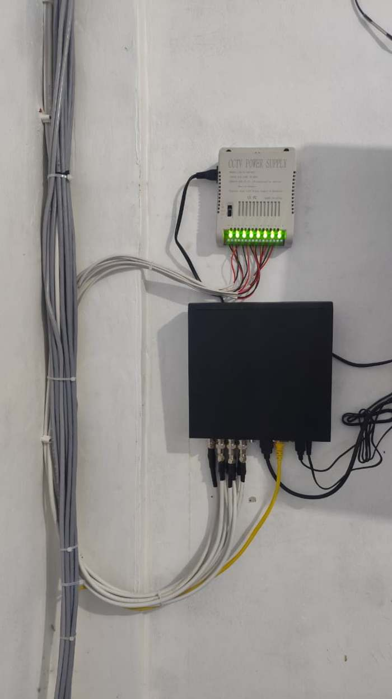
POWER & SIGNAL TERMINATIONSCOPEPemasangan power supply 8-channel, terminasi kabel BNC ke video balun, perapian jalur kabel pada dinding.
HARDWARECCTV Power Supply 8CH, Video Balun, Kabel Coaxial
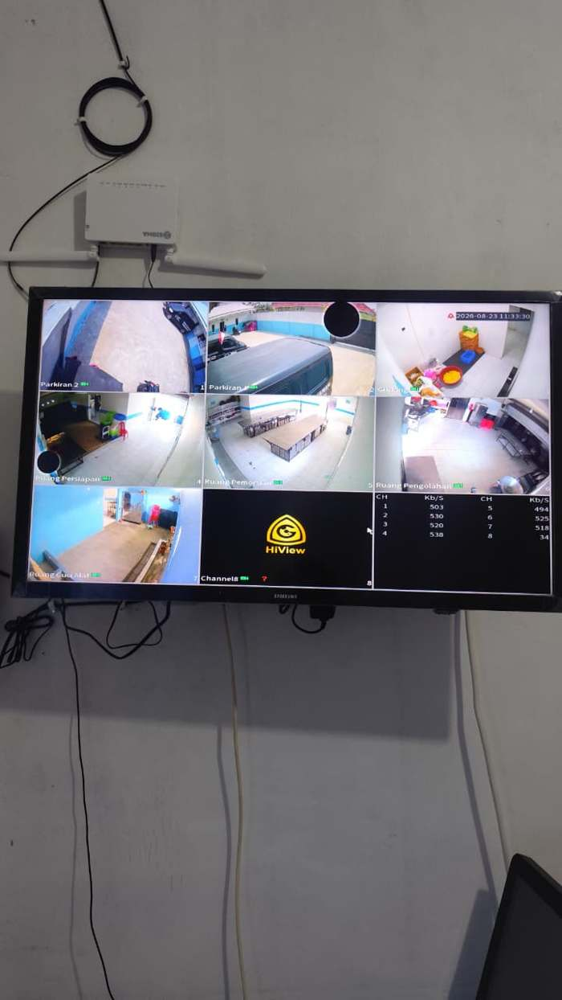
DVR DEPLOYMENTSCOPEInstalasi kamera fisheye & standar pada area produksi, konfigurasi DVR, monitoring bandwidth tiap channel.
HARDWAREDVR 8-Channel, Kamera Fisheye, Monitor
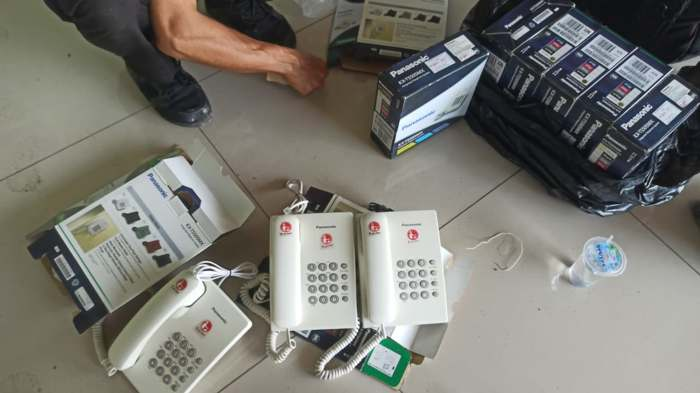
EXTENSION TESTINGSCOPEUnboxing unit telepon, pengujian nada sambung per ekstensi, pencocokan nomor sebelum serah terima ke klien.
HARDWAREPanasonic KX-TS505MX, Kabel Line Telepon
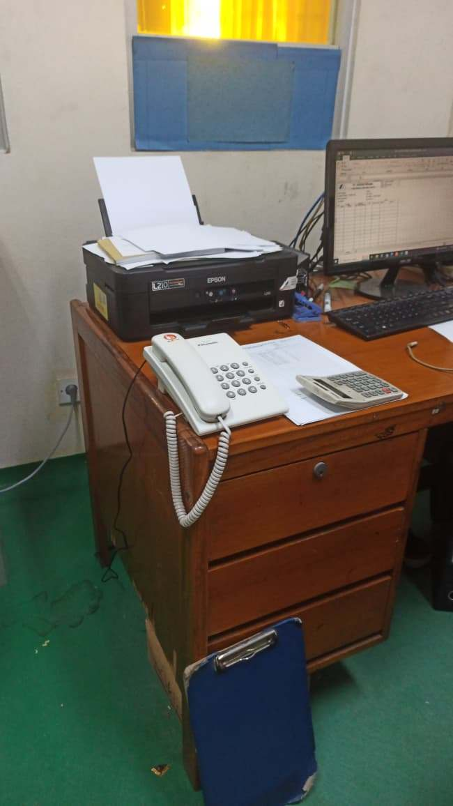
DESK UNIT INSTALLATIONSCOPEPenempatan unit telepon PABX pada meja kerja staf, pengujian sambungan line telepon, integrasi dengan printer & PC kerja.
HARDWAREPanasonic Telephone Unit, Epson L210 Printer, PC Monitor
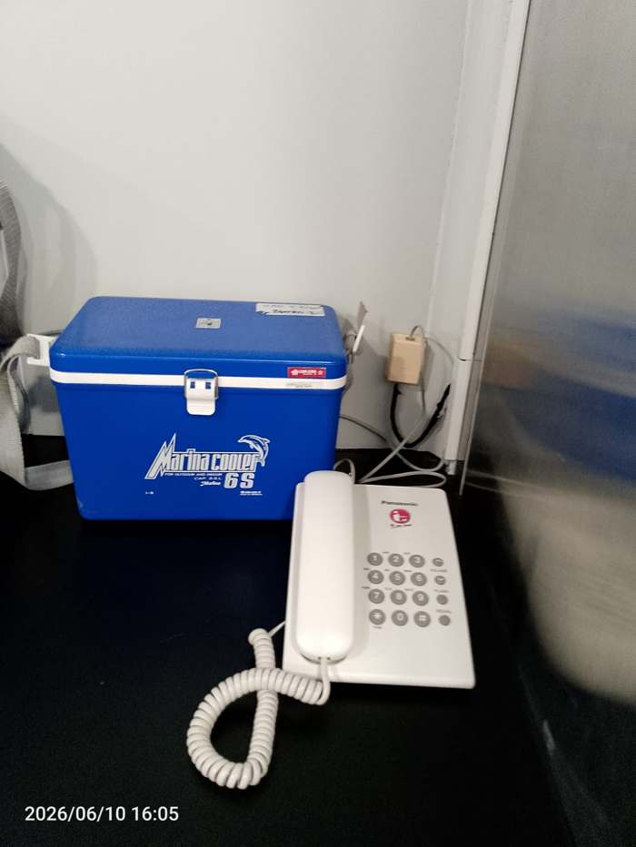
LINE INSTALLATIONSCOPEPemasangan unit telepon pada titik kerja baru, penyambungan kabel line ke roset dinding, pengujian nada panggil.
HARDWAREPanasonic Telephone Unit, Line Roset
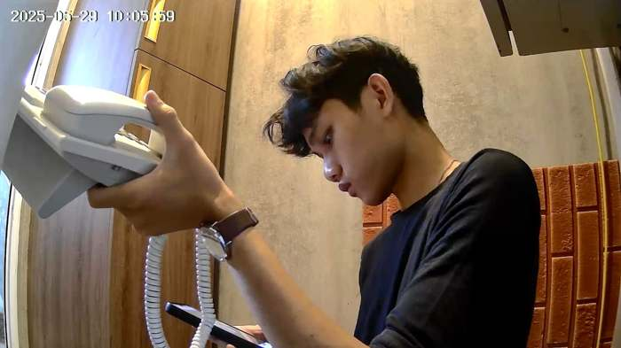
FOOTAGE VERIFICATIONSCOPEPengecekan hasil rekaman kamera fisheye secara langsung di lokasi, memastikan sudut pandang & kualitas gambar sudah sesuai.
HARDWAREKamera Fisheye Indoor, DVR/NVR
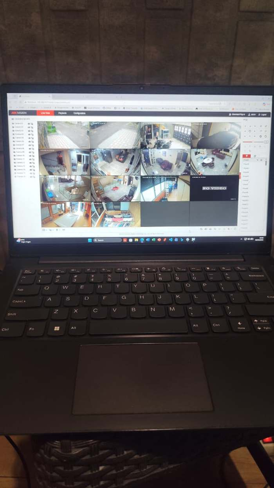
HIKVISION WEB LIVE VIEWSCOPELogin web-interface NVR Hikvision, pengaturan tampilan multi-kamera, pengecekan status live tiap channel.
HARDWAREHikvision NVR, Kamera IP 12-Channel, Laptop Konfigurasi
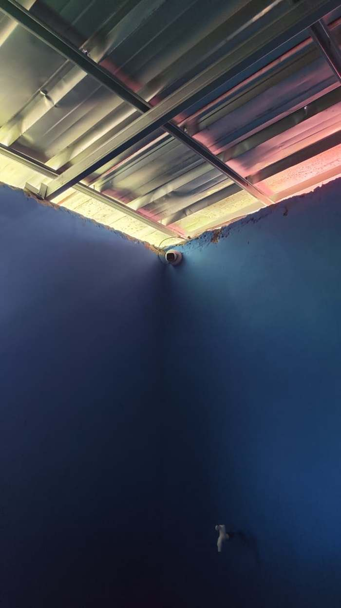
DOME CAMERA MOUNTINGSCOPEPemasangan kamera dome indoor pada sudut ruangan, pengaturan sudut pandang optimal, perapian jalur kabel menuju plafon.
HARDWAREDome Camera Indoor, Kabel Coaxial/UTP
SCOPE OF WORK
HARDWARE TERPASANG